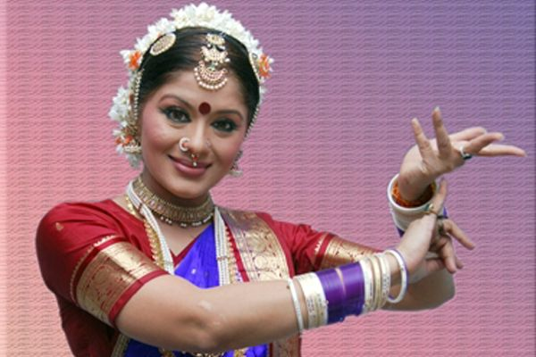
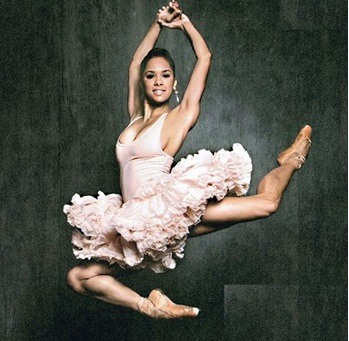
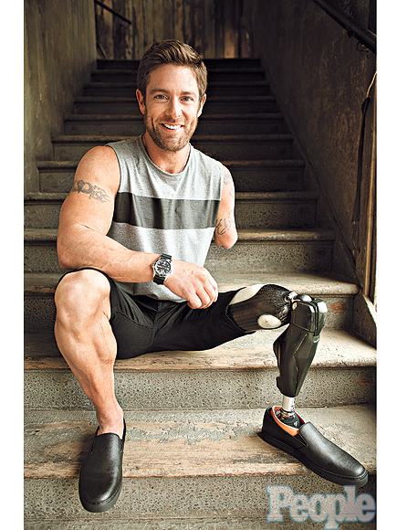

Inspirational Stories of Dancer
We all face adversity in our lives. Obstacles for dancers can come in many forms and it's inspiring to know that people can overcome great odds and it can be uplifting to realize that, not only are there others who struggle against adversity, but those who perhaps face greater obstacles than oneself.Few such people are:
Nyle DiMarco
Sudha Chandran

Misty Copeland

Noah Galloway

An actor, model and spokesman born into a large multigenerational Deaf family.Nyle used American Sign Language to amplify his natural talent to win the "Dancing With The Stars"
A veteran Bharatanatyam dancer and a National Film Award winning actress, Sudha Chandran has inspired many with her never-say-die attitude. After losing her right leg in a car accident in 1981 when she was only 16, she fought her way back to the world of dance with the help of an artificial limb.
Some critics have pointed at her muscular limps and disqualified her as a pure classical ballerina while others have argued that her artistry is not at a level where a principal dancer should be.With her sheer determination she has become the first African-American soloist at the American Ballet Theatre in 20 years
An Army veteran born in Alabama lost part of his two left limbs during a 2005 bomb blast in Iraq. He did not only survive but thrived after getting a bionic prosthetic leg. His dedication and passion made him the Top 3 finalis in "Dancing With the Stars"